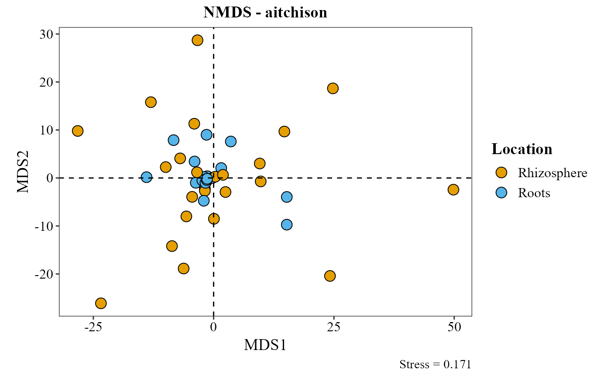

R/beta_ord_plot.R
beta_ord_plot.RdThis function computes beta diversity using several distance metrics and ordination methods (PCA, PCoA, NMDS). It requires an abundance table with taxonomy, metadata, and allows customization of color and shape aesthetics. It also supports compositional transformation via ALDEx2.
beta_ord_plot(
table,
metadata,
distance = "compositional",
ordination = "PCA",
group_col = NULL,
palette = "colorb",
shape_col = NULL,
legend_title = NULL,
taxonomy_db = "silva",
arrows_size = 10,
top_n = 5,
title = "auto",
save_table = FALSE,
table_filename = "ordination_scores.txt",
seed = 123
)A data frame with abundances. The last column must contain taxonomy information.
A data frame with sample metadata. The first column must contain the sample IDs.
Distance method: one of "euclidean", "bray",
"jaccard", "sorensen", "compositional" (default; CLR/Aitchison via
ALDEx2), "aitchison", or "robust.aitchison". Case-insensitive.
Note: ordination = "PCA" requires distance = "compositional".
Ordination method: one of "PCA" (default), "PCoA", or
"NMDS". Case-insensitive.
Column in metadata to fill/color points. Its type
decides the scale automatically: numeric columns (e.g. "dist_km")
get a continuous scale; character/factor columns (e.g. "estado2")
get a discrete qualitative scale.
Either a palette name or a vector of fixed
colors; which scale it produces depends on whether group_col is
discrete or continuous.
Named, discrete group_col: one of "colorb"
(default; qualitative colorblind-friendly palette), "grey",
"viridis", or "brewer" ("Set2").
Named, continuous group_col: "viridis" (default;
option = "cividis", matching the urban-distance map figure)
or "gradient" (colorblind-friendly blue-to-orange two-color
gradient).
Vector of colors, discrete group_col: used as-is, one
color per level (scale_*_manual).
Vector of colors, continuous group_col: used as gradient
stops (scale_*_gradientn).
Optional column in metadata to shape points.
Optional legend title.
Character. Reference taxonomy database used to clean up
the PCA loading-arrow labels: one of "silva" (default), "gg",
"unite", or "Kraken2" (case-insensitive). "Kraken2"
additionally concatenates genus + species (e.g. "Aspergillus
flavus") instead of showing the species epithet alone. Ignored when
ordination != "PCA".
Numeric. Size/length scaling factor for biplot arrows. Default 10.
Number of top contributing taxa to display as arrows in PCA.
Plot title. "auto" (default) generates "Ordination - distance";
NULL shows no title; any other string is used as-is.
Logical. If TRUE, saves a combined table of sample
ordination scores and (when ordination = "PCA") taxon loadings to
disk, distinguished by a type column ("site" or
"loading"). Default FALSE.
Character. File path/name for the saved table (used
when save_table = TRUE). Default "ordination_scores.txt".
Numeric. Random seed used for distance = "compositional"'s
Monte Carlo Dirichlet sampling (via ALDEx2::aldex.clr()), so
results are reproducible by default; set to a different value (or wrap
the call in your own set.seed() and leave this at its default) to
get a different random draw. Default 123.
A ggplot2 object.
table_path <- system.file("extdata", "tabla_bacteria.txt", package = "MicroBioMeta")
table <- read.delim(table_path, row.names = 1, check.names = FALSE)
metadata_path <- system.file("extdata", "metadata_bacteria.txt", package = "MicroBioMeta")
metadata <- read.delim(metadata_path, check.names = FALSE)
colnames(metadata)[1] <- "SampleID"
beta_ord_plot(
table = table,
metadata = metadata,
distance = "aitchison",
ordination = "NMDS",
group_col = "Location",
top_n = 5
)
#> Loading required namespace: ggrepel
#> Run 0 stress 0.1706715
#> Run 1 stress 0.2155698
#> Run 2 stress 0.1719696
#> Run 3 stress 0.1797951
#> Run 4 stress 0.1921148
#> Run 5 stress 0.1758142
#> Run 6 stress 0.1855761
#> Run 7 stress 0.1967478
#> Run 8 stress 0.199969
#> Run 9 stress 0.2152568
#> Run 10 stress 0.2089763
#> Run 11 stress 0.2131654
#> Run 12 stress 0.1803472
#> Run 13 stress 0.2118863
#> Run 14 stress 0.1978755
#> Run 15 stress 0.1734001
#> Run 16 stress 0.1707604
#> ... Procrustes: rmse 0.06080309 max resid 0.2272373
#> Run 17 stress 0.1842817
#> Run 18 stress 0.1866185
#> Run 19 stress 0.1982192
#> Run 20 stress 0.1770608
#> Run 21 stress 0.1892933
#> Run 22 stress 0.2027165
#> Run 23 stress 0.1918152
#> Run 24 stress 0.17325
#> Run 25 stress 0.1841278
#> Run 26 stress 0.1865108
#> Run 27 stress 0.1792333
#> Run 28 stress 0.1972452
#> Run 29 stress 0.1946402
#> Run 30 stress 0.1928708
#> Run 31 stress 0.1970503
#> Run 32 stress 0.2036613
#> Run 33 stress 0.1905785
#> Run 34 stress 0.192991
#> Run 35 stress 0.1805166
#> Run 36 stress 0.2113834
#> Run 37 stress 0.216324
#> Run 38 stress 0.1789651
#> Run 39 stress 0.181085
#> Run 40 stress 0.1851935
#> Run 41 stress 0.1784918
#> Run 42 stress 0.2196472
#> Run 43 stress 0.2044763
#> Run 44 stress 0.1951448
#> Run 45 stress 0.2058345
#> Run 46 stress 0.1960757
#> Run 47 stress 0.1933797
#> Run 48 stress 0.1881742
#> Run 49 stress 0.197731
#> Run 50 stress 0.1878218
#> Run 51 stress 0.218125
#> Run 52 stress 0.2055175
#> Run 53 stress 0.1813276
#> Run 54 stress 0.1964198
#> Run 55 stress 0.1840136
#> Run 56 stress 0.1823575
#> Run 57 stress 0.1730434
#> Run 58 stress 0.2047062
#> Run 59 stress 0.2042195
#> Run 60 stress 0.1974137
#> Run 61 stress 0.2030334
#> Run 62 stress 0.1824286
#> Run 63 stress 0.1793867
#> Run 64 stress 0.2050423
#> Run 65 stress 0.1849363
#> Run 66 stress 0.1798573
#> Run 67 stress 0.1929429
#> Run 68 stress 0.186958
#> Run 69 stress 0.2117428
#> Run 70 stress 0.1875919
#> Run 71 stress 0.1956884
#> Run 72 stress 0.1990089
#> Run 73 stress 0.1831598
#> Run 74 stress 0.2075504
#> Run 75 stress 0.1755164
#> Run 76 stress 0.1711051
#> ... Procrustes: rmse 0.05249739 max resid 0.2373464
#> Run 77 stress 0.2248077
#> Run 78 stress 0.2007224
#> Run 79 stress 0.1816515
#> Run 80 stress 0.2074464
#> Run 81 stress 0.204684
#> Run 82 stress 0.1771717
#> Run 83 stress 0.2066129
#> Run 84 stress 0.1810903
#> Run 85 stress 0.1727549
#> Run 86 stress 0.1905483
#> Run 87 stress 0.2087548
#> Run 88 stress 0.1912186
#> Run 89 stress 0.1964479
#> Run 90 stress 0.1805861
#> Run 91 stress 0.183507
#> Run 92 stress 0.1799765
#> Run 93 stress 0.198668
#> Run 94 stress 0.1713045
#> Run 95 stress 0.193281
#> Run 96 stress 0.1978412
#> Run 97 stress 0.1772173
#> Run 98 stress 0.1941517
#> Run 99 stress 0.1889278
#> Run 100 stress 0.1900375
#> *** Best solution was not repeated -- monoMDS stopping criteria:
#> 19: no. of iterations >= maxit
#> 81: stress ratio > sratmax
#> Coordinate system already present.
#> ℹ Adding new coordinate system, which will replace the existing one.
